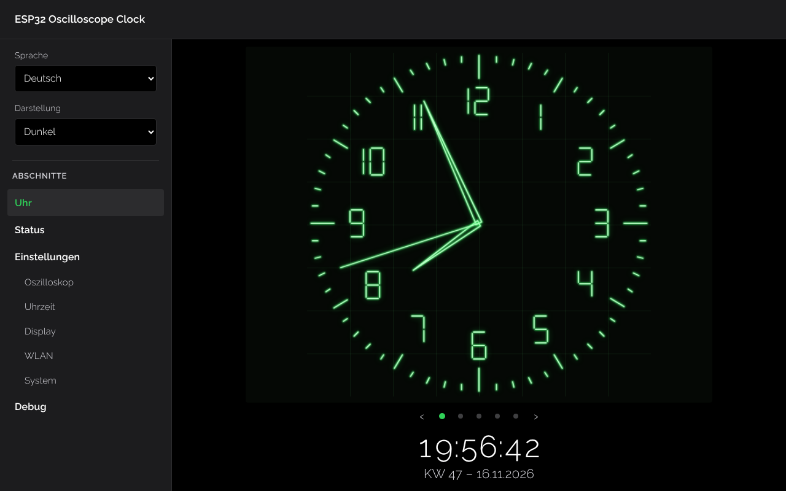
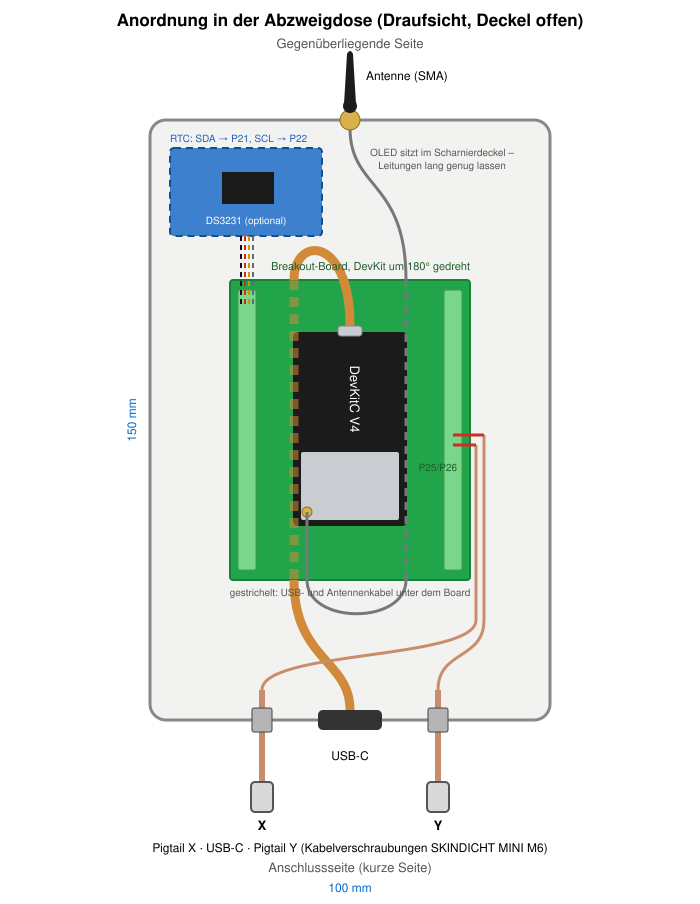
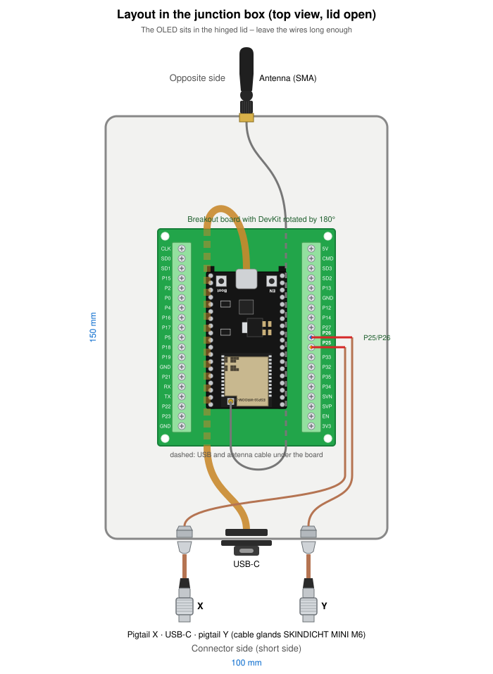
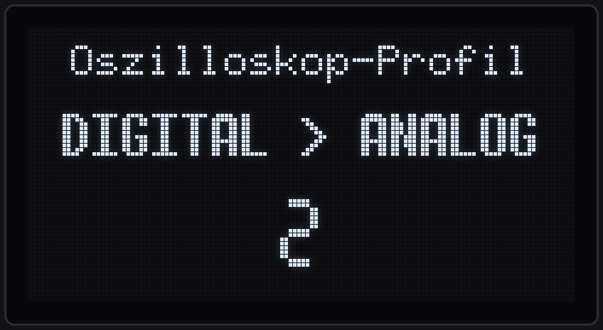
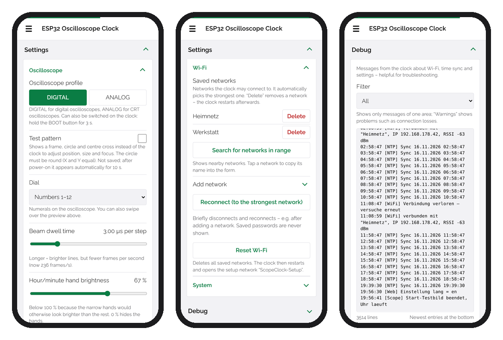
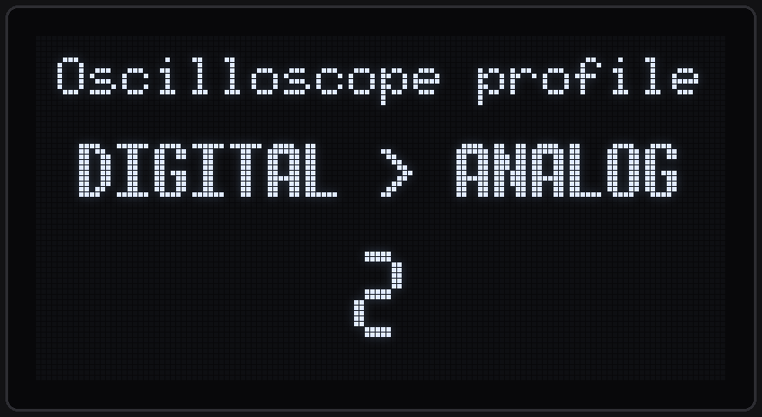
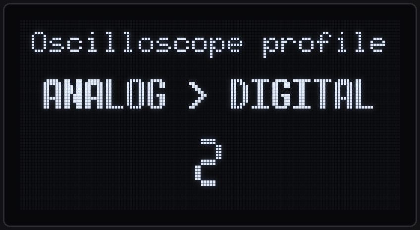
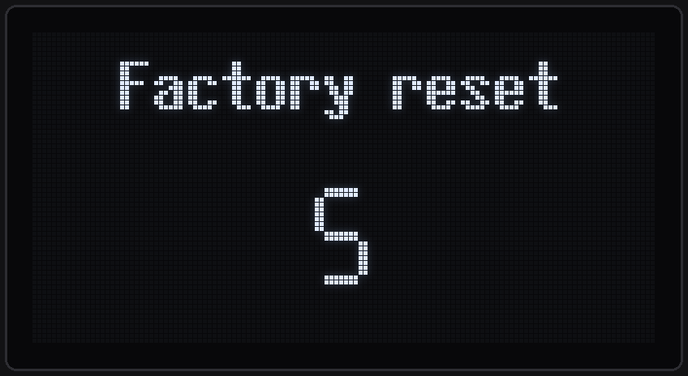
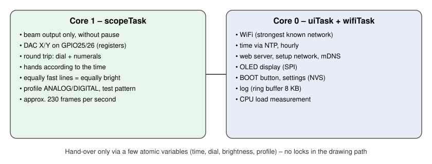

ESP32 Oscilloscope Clock v2.0
ProjektProject

Eine analoge Uhr, gezeichnet vom Elektronenstrahl: Ein ESP32 erzeugt mit seinen beiden DACs die Spannungen für X und Y und fährt Zifferblatt, Ziffern und Zeiger etwa 230-mal pro Sekunde ab – mit Zeit aus dem Internet, optionaler OLED-Anzeige und einem Webinterface fürs Handy.
An analogue clock drawn by the electron beam: an ESP32 generates the X and Y voltages with its two DACs and traces dial, numerals and hands about 230 times per second – with time from the internet, an optional OLED display and a web interface for your phone.
0 Links & Dokumente0 Links & documents
1 Überblick1 Overview
Die ESP32 Oscilloscope Clock zeichnet eine analoge Uhr auf den Bildschirm eines Oszilloskops. Das Oszilloskop arbeitet dabei im X/Y-Betrieb: Zwei Spannungen lenken den Strahl waagerecht und senkrecht ab. Ein ESP32 erzeugt diese beiden Spannungen mit seinen eingebauten Digital-Analog-Wandlern (DAC) und fährt so Zifferblatt, Ziffern und Zeiger etwa 200-mal pro Sekunde nach.

Funktionen
- Genaue Zeit aus dem Internet (NTP), stündlich abgeglichen, Sommer-/Winterzeit automatisch. Ohne Internet lässt sich die Zeit im Webinterface stellen.
- Fünf Zifferblätter: Ziffern 1–12, nur 12·3·6·9, Bahnhof (Stundenbalken statt Ziffern), römisch XII·III·VI·IX, römisch I–XII. Umschalten durch Wischen über die Vorschau im Webinterface.
- Gleich helle Linien durch konstante Strahlgeschwindigkeit, kaum sichtbare Rücklaufspuren.
- Ein Gerät für alle Oszilloskope: Profil DIGITAL (Speicher-Oszilloskope) oder ANALOG (Röhre), umschaltbar per BOOT-Taster oder Webinterface.
- OLED-Anzeige am Gerät (optional, im Prototyp verbaut): Uhrzeit, Kalenderwoche, Datum, WLAN und Signalstärke.
- Webinterface für Handy und PC: Live-Vorschau, Status, alle Einstellungen, WLAN-Verwaltung, Debug-Protokoll. Deutsch und Englisch, hell und dunkel, als App auf dem Startbildschirm.
- Testbild zum Einstellen des Oszilloskops, nach jedem Einschalten automatisch 10 Sekunden lang.


The ESP32 Oscilloscope Clock draws an analogue clock on the screen of an oscilloscope. The oscilloscope works in X/Y mode: two voltages deflect the beam horizontally and vertically. An ESP32 generates these two voltages with its built-in digital-to-analogue converters (DACs) and traces the dial, numerals and hands about 200 times per second.

Features
- Accurate time from the internet (NTP), synchronised every hour, automatic daylight saving time. Without internet the time can be set in the web interface.
- Five dials: numerals 1–12, only 12·3·6·9, station clock (hour bars instead of numerals), Roman XII·III·VI·IX, Roman I–XII. Switch by swiping over the preview in the web interface.
- Equally bright lines thanks to a constant beam speed, hardly visible retrace lines.
- One device for all oscilloscopes: profile DIGITAL (storage oscilloscopes) or ANALOG (CRT), switchable with the BOOT button or in the web interface.
- OLED display on the device (optional, fitted in the prototype): time, calendar week, date, Wi-Fi and signal strength.
- Web interface for phone and PC: live preview, status, all settings, Wi-Fi management, debug log. German and English, light and dark, installable as an app on the home screen.
- Test pattern for adjusting the oscilloscope, shown automatically for 10 seconds after every power-on.


2 Teileliste und Werkzeug2 Parts list and tools
Die Liste entspricht dem Aufbau des Prototyps. Die Signale verlassen das Gehäuse nicht über Einbaubuchsen, sondern über BNC-Pigtail-Leitungen, die mit Kabelverschraubungen durch die Gehäusewand geführt werden. Der BNC-Stecker am Ende kommt direkt in den Eingang des Oszilloskops, ein zusätzliches BNC-Kabel ist nicht nötig.
| Anz. | Teil | Hinweis |
|---|---|---|
| 1 | ESP32-WROOM-32U DevKitC V4 mit USB-C und Antennen-Kit (DUBEUYEW, „2 Stück ESP32-WROOM-32U ESP32 DevKitC V4 USB-C mit Antennen-Kit“), 48,5 × 28,5 mm | Klassischer ESP32 mit zwei 8-Bit-DACs an GPIO25/26, USB-Seriell-Wandler CP2102. Das Antennen-Kit enthält das IPEX→SMA-Pigtail. Andere ESP32-Varianten (S2, S3, C3) haben keine bzw. andere DACs und passen nicht. |
| 1 | ESP32-Breakout-Board mit Schraubklemmen (XTVTX, „ESP32 Breakout Board Erweiterungskarte GPIO 1 in 2“, 2er-Pack) | Das DevKit wird aufgesteckt, alle Leitungen kommen in Schraubklemmen – am DevKit wird nichts gelötet. Die Klemmen sind wie die Stifte beschriftet (3V3, GND, P25, P26, P23 …). |
| 2 | BNC-Pigtail-Leitung BNC-Stecker auf 2,54-mm-DuPont-Stift, RG316 (TEJIATE, „SMA to DuPont BNC/Q9/N … RG316“, Variante BNC-J to J) | X und Y. Länge passend zum Abstand zum Oszilloskop wählen (30–80 cm erhältlich; 50 cm ist ein guter Wert). Rot = Innenleiter (Signal), braun = Schirm (Masse) – mit dem Durchgangsprüfer bestätigen. Die DuPont-Stecker werden beim Aufbau abgeschnitten. |
| 2 | Kabelverschraubung Lapp SKINDICHT MINI M6×1, Messing vernickelt, Klemmbereich 2–3 mm, IP68 (Lapp 52001860, RS 458-3953) | Je Pigtail eine; hält und dichtet das RG316 (Ø ca. 2,5 mm) in der Gehäusewand. |
| 1 | USB-C-Einbauverlängerung USB 3.1, IP67, 0,2 m, Stecker auf Buchse, FPC-Flachbandkabel, Einbauöffnung 16 mm (Plinkwirekb) | USB-C-Buchse in der Gehäusewand; das Flachbandkabel steckt innen im DevKit. Darüber wird die Uhr versorgt und programmiert. |
| 1 | Abzweigdose ABS 150 × 100 × 70 mm, IP67, mit Scharnierdeckel, Edelstahlverschlüssen und Montageplatte (Yunseity) | Kunststoff, damit das WLAN-Signal durchkommt. Das Breakout-Board wird auf die gelochte Montageplatte geschraubt. |
| 1 | Waveshare 2,42inch OLED Display Module, weiß, 128 × 64 Pixel, SPI/I²C (SSD1309); Platine 61,5 × 39,5 mm, aktive Fläche 55,0 × 27,5 mm | Optional – die Uhr läuft auch ohne Display. Im Auslieferungszustand (4-Wire-SPI) verwenden, nichts umlöten. Stiftleiste von unten: VCC, GND, DIN, CLK, CS, DC, RST. |
| 1 | WLAN-Antenne Bingfu 2,4/5,8 GHz, 8 dBi, SMA-Stecker (Variante „SMA“), abwinkelbar | Pflicht: Das Modul -32U hat keine eingebaute Antenne. Sie wird auf die SMA-Buchse des IPEX-Pigtails aus dem Antennen-Kit geschraubt – SMA und RP-SMA nicht mischen (Stecker der Antenne muss zur Buchse des Pigtails passen). |
| 2 | Widerstand 220 Ω, 0,25 W (empfohlen) | In die rote Ader jedes Pigtails eingelötet; schützt die DAC-Ausgänge bei einem Kurzschluss am BNC-Stecker. |
| (1) | Optional: Echtzeituhr DS3231, Modul ZS-042 (z. B. WINGONEER „Tiny DS3231 AT24C32“) | Hält die Uhrzeit nach einem Stromausfall ohne Internet. VCC → 3V3, GND → GND, SDA → P21, SCL → P22. Knopfzelle: normale CR2032 – Modul nur an 3V3 (an 5 V würde die Ladeschaltung sie laden). Im Webinterface einschalten. |
| – | Kleinteile | 7 Leitungen für das OLED (DuPont-Kabel oder Litze), Schrumpfschlauch, Aderendhülsen 0,25–0,5 mm² (optional), Abstandsbolzen M2,5 (OLED) und M3 (Breakout-Board), ggf. 2–3 Muttern M6 |
| 1 | USB-Netzteil 5 V, ≥ 1 A, mit USB-C-Kabel | Ein normales, ungeerdetes Steckernetzteil vermeidet Brummschleifen. |
Beim Bau des Prototyps verwendete Artikel
- ESP32 DevKitC V4 (ESP32-WROOM-32U, USB-C) mit Antennen-Kit (DUBEUYEW, 2 Stück) – amazon.de/dp/B0F65G3V81
- Waveshare 2,42" OLED, 128 × 64, SPI/I²C, weiß – amazon.de/dp/B0CL6WMHJN
- WLAN-Antenne Bingfu 2,4/5,8 GHz, 8 dBi, SMA-Stecker – amazon.de/dp/B086JCJMSN
- Optional: Echtzeituhr DS3231 (WINGONEER „Tiny DS3231 AT24C32“, Modul ZS-042) – amazon.de/dp/B01H5NAFUY
- Abzweigdose IP67, 150 × 100 × 70 mm (Yunseity) – amazon.de/dp/B0B5RGNNXV
- ESP32-Breakout-Board mit Schraubklemmen (XTVTX, 2er-Pack) – amazon.de/dp/B0BCWBW4SR
- USB-C-Einbauverlängerung, 16-mm-Einbauöffnung (Plinkwirekb) – amazon.de/dp/B0FM7RLQTF
- BNC-Pigtail RG316, BNC-Stecker auf DuPont – de.aliexpress.com/item/1005006318978533.html
- Kabelverschraubung Lapp SKINDICHT MINI M6 – de.rs-online.com/…/4583953
Werkzeug
- Lötkolben (feine Spitze) und Lötzinn – nur für die beiden Widerstände in den Pigtails –, Schrumpfschlauch, Seitenschneider, Abisolierzange
- Kleiner Schraubendreher für die Schraubklemmen, Schraubenschlüssel SW 9 für die Kabelverschraubungen
- Bohrmaschine mit Bohrern 3 mm, 5 mm, 6,5 mm, Stufenbohrer bis 16 mm, Gewindebohrer M6 (oder M6-Muttern), Feile, Cuttermesser (OLED-Fenster)
- Multimeter zum Prüfen vor dem ersten Einschalten
- PC mit Arduino IDE 2.x (oder PlatformIO) und USB-C-Kabel
The list matches the prototype. The signals do not leave the enclosure through panel sockets but through BNC pigtail cables that are led through the enclosure wall with cable glands. The BNC plug at the end goes straight into the oscilloscope input; no additional BNC cable is needed.
| Qty | Part | Note |
|---|---|---|
| 1 | ESP32-WROOM-32U DevKitC V4 with USB-C and antenna kit (DUBEUYEW, “2 pcs ESP32-WROOM-32U ESP32 DevKitC V4 USB-C with antenna kit”), 48.5 × 28.5 mm | Classic ESP32 with two 8-bit DACs on GPIO25/26, USB-serial converter CP2102. The antenna kit contains the IPEX→SMA pigtail. Other ESP32 variants (S2, S3, C3) have no or different DACs and do not fit. |
| 1 | ESP32 breakout board with screw terminals (XTVTX, “ESP32 breakout board expansion board GPIO 1 in 2”, pack of 2) | The DevKit is plugged in and all wires go into screw terminals – nothing is soldered on the DevKit. The terminals are labelled like the pins (3V3, GND, P25, P26, P23 …). |
| 2 | BNC pigtail cable, BNC plug to 2.54 mm DuPont pin, RG316 (TEJIATE, “SMA to DuPont BNC/Q9/N … RG316”, variant BNC-J to J) | X and Y. Choose the length to suit the distance to the oscilloscope (30–80 cm available; 50 cm is a good choice). Red = core (signal), brown = shield (ground) – confirm with a continuity tester. The DuPont plugs are cut off during assembly. |
| 2 | Cable gland Lapp SKINDICHT MINI M6×1, nickel-plated brass, clamping range 2–3 mm, IP68 (Lapp 52001860, RS 458-3953) | One per pigtail; holds and seals the RG316 (approx. Ø 2.5 mm) in the enclosure wall. |
| 1 | USB-C panel-mount extension USB 3.1, IP67, 0.2 m, plug to socket, FPC flat cable, 16 mm cut-out (Plinkwirekb) | USB-C socket in the enclosure wall; the flat cable plugs into the DevKit inside. It powers and programs the clock. |
| 1 | ABS junction box 150 × 100 × 70 mm, IP67, with hinged lid, stainless steel latches and mounting plate (Yunseity) | Plastic so that the Wi-Fi signal gets through. The breakout board is screwed onto the perforated mounting plate. |
| 1 | Waveshare 2.42inch OLED display module, white, 128 × 64 pixels, SPI/I²C (SSD1309); board 61.5 × 39.5 mm, active area 55.0 × 27.5 mm | Optional – the clock also runs without a display. Use as delivered (4-wire SPI), no resoldering. Pin header from the bottom: VCC, GND, DIN, CLK, CS, DC, RST. |
| 1 | Wi-Fi antenna Bingfu 2.4/5.8 GHz, 8 dBi, SMA plug (variant “SMA”), angled | Mandatory: the -32U module has no built-in antenna. It screws onto the SMA socket of the IPEX pigtail from the antenna kit – do not mix SMA and RP-SMA (the antenna plug must match the pigtail socket). |
| 2 | Resistor 220 Ω, 0.25 W (recommended) | Soldered into the red lead of each pigtail; protects the DAC outputs if the BNC plug is short-circuited. |
| (1) | Optional: real-time clock DS3231, module ZS-042 (e.g. WINGONEER “Tiny DS3231 AT24C32”) | Keeps the time after a power failure without internet. VCC → 3V3, GND → GND, SDA → P21, SCL → P22. Coin cell: normal CR2032 – connect the module to 3V3 only (at 5 V its charging circuit would charge it). Switch on in the web interface. |
| – | Small parts | 7 wires for the OLED (DuPont cables or stranded wire), heat-shrink tubing, wire-end ferrules 0.25–0.5 mm² (optional), standoffs M2.5 (OLED) and M3 (breakout board), possibly 2–3 M6 nuts |
| 1 | USB power supply 5 V, ≥ 1 A, with USB-C cable | A normal, unearthed plug-in power supply avoids ground loops. |
Articles used to build the prototype
- ESP32 DevKitC V4 (ESP32-WROOM-32U, USB-C) with antenna kit (DUBEUYEW, pack of 2) – amazon.de/dp/B0F65G3V81
- Waveshare 2.42" OLED, 128 × 64, SPI/I²C, white – amazon.de/dp/B0CL6WMHJN
- WiFi antenna Bingfu 2.4/5.8 GHz, 8 dBi, SMA plug – amazon.de/dp/B086JCJMSN
- Optional: DS3231 real-time clock (WINGONEER “Tiny DS3231 AT24C32”, module ZS-042) – amazon.de/dp/B01H5NAFUY
- Junction box IP67, 150 × 100 × 70 mm (Yunseity) – amazon.de/dp/B0B5RGNNXV
- ESP32 breakout board with screw terminals (XTVTX, pack of 2) – amazon.de/dp/B0BCWBW4SR
- USB-C panel extension, 16 mm mounting hole (Plinkwirekb) – amazon.de/dp/B0FM7RLQTF
- BNC pigtail RG316, BNC plug to DuPont – de.aliexpress.com/item/1005006318978533.html
- Cable gland Lapp SKINDICHT MINI M6 – de.rs-online.com/…/4583953
Tools
- Soldering iron (fine tip) and solder – only for the two resistors in the pigtails –, heat-shrink tubing, side cutters, wire stripper
- Small screwdriver for the screw terminals, 9 mm spanner for the cable glands
- Drill with 3 mm, 5 mm and 6.5 mm bits, step drill up to 16 mm, M6 tap (or M6 nuts), file, utility knife (OLED window)
- Multimeter for checking before the first power-on
- PC with Arduino IDE 2.x (or PlatformIO) and a USB-C cable
3 Aufbauanleitung Schritt für Schritt3 Step-by-step assembly

| Klemme am Breakout-Board | Anschluss | Ziel | Funktion |
|---|---|---|---|
| P25 (GPIO25, DAC1) | über 220 Ω | Pigtail „X“, rote Ader → Oszilloskop Kanal 1 | Analogausgang DAC1: Spannung für die X-Ablenkung |
| P26 (GPIO26, DAC2) | über 220 Ω | Pigtail „Y“, rote Ader → Oszilloskop Kanal 2 | Analogausgang DAC2: Spannung für die Y-Ablenkung |
| GND (linke Reihe) | direkt | braune Adern (Schirm) aller Pigtails | Masse – Bezug der Ablenkspannungen |
| 3V3 | direkt | OLED VCC | Versorgung 3,3 V für das OLED |
| GND (rechte Reihe) | direkt | OLED GND | Masse des OLED |
| P23 | direkt | OLED DIN | SPI-Daten (VSPI MOSI): Bildinhalt zum Display |
| P18 | direkt | OLED CLK | SPI-Takt (VSPI SCK) |
| P5 | direkt | OLED CS | Chip-Auswahl, low = OLED angesprochen |
| P17 | direkt | OLED DC | Daten/Befehl: high = Bilddaten, low = Befehl |
| P4 | direkt | OLED RST | Reset des Displays (low-aktiv) |
| P21 / P22 · 3V3 · GND | direkt | optional: Echtzeituhr DS3231 – SDA / SCL · VCC · GND | I²C-Daten / I²C-Takt · Versorgung · Masse |
| IPEX-Buchse am Modul | Antennen-Pigtail | SMA-Buchse in der gegenüberliegenden Seite → Antenne | WLAN-Signal 2,4 GHz |
| USB-C des DevKits | Flachbandkabel | USB-C-Einbaubuchse in der Anschlussseite | Versorgung 5 V, Hochladen der Firmware, serieller Monitor |


| Terminal on the breakout board | Connection | Target | Function |
|---|---|---|---|
| P25 (GPIO25, DAC1) | via 220 Ω | pigtail “X”, red lead → oscilloscope channel 1 | analogue output DAC1: voltage for the X deflection |
| P26 (GPIO26, DAC2) | via 220 Ω | pigtail “Y”, red lead → oscilloscope channel 2 | analogue output DAC2: voltage for the Y deflection |
| GND (left row) | direct | brown leads (shield) of all pigtails | ground – reference of the deflection voltages |
| 3V3 | direct | OLED VCC | 3.3 V supply for the OLED |
| GND (right row) | direct | OLED GND | OLED ground |
| P23 | direct | OLED DIN | SPI data (VSPI MOSI): image content to the display |
| P18 | direct | OLED CLK | SPI clock (VSPI SCK) |
| P5 | direct | OLED CS | chip select, low = OLED addressed |
| P17 | direct | OLED DC | data/command: high = image data, low = command |
| P4 | direct | OLED RST | display reset (active low) |
| P21 / P22 · 3V3 · GND | direct | optional: DS3231 real-time clock – SDA / SCL · VCC · GND | I²C data / I²C clock · supply · ground |
| IPEX socket on the module | antenna pigtail | SMA socket in the opposite side → antenna | Wi-Fi signal 2.4 GHz |
| USB-C of the DevKit | flat cable | USB-C panel socket in the connector side | 5 V supply, firmware upload, serial monitor |

4 Firmware installieren4 Installing the firmware
Mit der Arduino IDE 2.x
- Boardverwalter: esp32 by Espressif installieren (Version 3.x, auch 2.0.x geht), Board ESP32 Dev Module wählen.
- Unter Werkzeuge → Partition Scheme eine der beiden Varianten aus der Tabelle unten wählen.
- Bibliotheksverwalter: U8g2 (von oliver) installieren.
ESP32_OscilloscopeClock_v2.0/ESP32_OscilloscopeClock_v2.0.inoöffnen und hochladen.- Seriellen Monitor auf 115200 Baud stellen – dort erscheinen dieselben Meldungen wie im Debug-Bereich des Webinterfaces.
Partitionsschema: zwei Varianten
| Variante | Arduino IDE: Partition Scheme | PlatformIO | Programmspeicher |
|---|---|---|---|
| A – Huge APP (empfohlen) | „Huge APP (3MB No OTA/1MB SPIFFS)“ | pio run -t upload | 1.241.138 von 3.145.728 Byte (39 %) |
| B – Standard | „Default 4MB with spiffs (1.2MB APP/1.5MB SPIFFS)“ – Voreinstellung, nichts umstellen | pio run -e standard -t upload | 1.243.154 von 1.310.720 Byte (94 %) |
Beide Varianten laufen gleich. A lässt rund 1,9 MB Platz für Erweiterungen; die Uhr nutzt weder OTA-Updates noch SPIFFS, deshalb fehlt dabei nichts. B funktioniert ohne Umstellen, hat aber nur noch etwa 70 KB Reserve. Ein Wechsel ist jederzeit möglich (Schema wählen, neu hochladen) – gespeicherte WLANs und Einstellungen liegen bei beiden an derselben Stelle und bleiben erhalten. Meldet die IDE beim Hochladen „Sketch too big“, ist Variante B eingestellt: auf A wechseln.
config.h; im Betrieb ist das Webinterface bequemer.With the Arduino IDE 2.x
- Boards manager: install esp32 by Espressif (version 3.x, 2.0.x also works) and select the board ESP32 Dev Module.
- Under Tools → Partition Scheme choose one of the two variants from the table below.
- Library manager: install U8g2 (by oliver).
- Open
ESP32_OscilloscopeClock_v2.0/ESP32_OscilloscopeClock_v2.0.inoand upload it. - Set the serial monitor to 115200 baud – it shows the same messages as the debug section of the web interface.
Partition scheme: two variants
| Variant | Arduino IDE: Partition Scheme | PlatformIO | Program memory |
|---|---|---|---|
| A – Huge APP (recommended) | “Huge APP (3MB No OTA/1MB SPIFFS)” | pio run -t upload | 1,241,138 of 3,145,728 bytes (39 %) |
| B – Standard | “Default 4MB with spiffs (1.2MB APP/1.5MB SPIFFS)” – the default, nothing to change | pio run -e standard -t upload | 1,243,154 of 1,310,720 bytes (94 %) |
Both variants work the same. A leaves about 1.9 MB for extensions; the clock uses neither OTA updates nor SPIFFS, so nothing is lost. B works without changing anything but leaves only about 70 KB. You can switch at any time (choose the scheme, upload again) – saved networks and settings are stored at the same place in both and are kept. If the IDE reports “Sketch too big” when uploading, variant B is selected: switch to A.
config.h; during operation the web interface is more convenient.5 Erste Inbetriebnahme5 First start-up
http://192.168.4.1 aufrufen. Die Gruppe WLAN ist dann bereits aufgeklappt:
„Netze in Reichweite suchen“, eigenes Netz antippen, Passwort eingeben, „Netz speichern“.
http://192.168.4.1. The Wi-Fi group is then already expanded:
“Search for networks in range”, tap your network, enter the password, “Save network”.
6 Oszilloskop einstellen6 Setting up the oscilloscope
Anschließen
- Die Pigtails stecken direkt im Oszilloskop – das ist die beste Verbindung. Wer stattdessen Tastköpfe benutzt, nimmt kurze Masseleitungen und stellt 10:1-Tastköpfe vorher am Kalibrierausgang des Oszilloskops sauber ein (Rechteck ohne Überschwinger); ein verstellter Tastkopf verzerrt Ecken und Kreise. Die Empfindlichkeit dann entsprechend umrechnen (10:1 → 50 mV/Div).
- Beide Kanäle auf DC-Kopplung: Bei AC-Kopplung kippt der Gleichanteil weg, das Bild verzerrt und wandert.
- Brummschleife vermeiden: Die BNC-Masse des Oszilloskops liegt am Schutzleiter; ein ebenfalls geerdeter PC am USB kann Brumm ins Bild bringen. Im Dauerbetrieb ein normales USB-Steckernetzteil verwenden.

So wird das Testbild genutzt:
- Mittelkreuz in die Bildmitte schieben (Position X und Y).
- Rahmen zeigt genau den Umriss der Uhr; bei 0,5 V/Div ist er gut 6 Teilungen breit und hoch (Empfindlichkeit).
- Kreis muss rund sein – oval bedeutet ungleiche Empfindlichkeit von X und Y.
- Fokus und Intensität so einstellen, dass die Linien scharf und nicht überstrahlt sind.
Das Testbild wird nicht gespeichert. Nach jedem Einschalten erscheint es automatisch 10 Sekunden lang (BOOT_TEST_S).
| Einstellung | Wert | Grund |
|---|---|---|
| Betriebsart | X/Y | Kanal 1 lenkt waagerecht, Kanal 2 senkrecht ab |
| Kopplung | DC, beide Kanäle | Die Signale haben einen Gleichanteil (0–3,2 V) |
| Empfindlichkeit | 0,5 V/Div, beide gleich | 8 Teilungen = 4 V, das 3,2-V-Bild passt hinein |
| Position/Offset | Bildmitte, ca. −1,6 V | DAC-Mitte ≈ 1,6 V |
| Zeitbasis (digital) | 1 ms/Div | Ein Aufnahmefenster deckt ganze Uhrenbilder ab (ca. 5 ms je Bild) |
| Trigger (digital) | Auto | Die Uhr liefert kein Triggerereignis |
| Nachleuchten | kurz bis mittel, falls vorhanden | beruhigt den Bildaufbau |
| Bandbreitenbegrenzung | ein (z. B. 20 MHz) | weniger Rauschen |
X/Y-Betrieb am digitalen Oszilloskop
Ein analoges Oszilloskop zeichnet in Echtzeit, ein digitales tastet beide Kanäle erst ab und stellt die Werte danach als Punkte oder verbundene Punkte dar. Daraus ergeben sich einige Unterschiede:
- Profil DIGITAL verwenden: Der Strahl springt dann hart von Linie zu Linie. Bei gebremsten Sprüngen würde das digitale Oszilloskop die Zwischenwerte als Punktspur mitten durchs Bild zeigen.
- Darstellung „Punkte“ statt „Vektoren“: Verbundene Punkte ziehen Linien über jeden Sprung. Bei Punkten bleiben die Sprünge unsichtbar, die Linien wirken aber dünner.
- Abtastrate und Aufzeichnungslänge: Die Zeitbasis (etwa 1 ms/Div) bestimmt, wie dicht die Punkte liegen. Liegen sie zu weit auseinander, die Zeitbasis kleiner oder die Aufzeichnungslänge größer wählen; längere Verweilzeiten helfen ebenfalls.
- Nachleuchten (Persistence) kurz bis mittel einstellen: Es sammelt mehrere Aufnahmen und beruhigt das Bild. Unendliches Nachleuchten zeigt auch die Bewegung des Sekundenzeigers als Fächer.
- Bildrate des Displays: Viele digitale Oszilloskope erneuern den Schirm nur einige Male pro Sekunde; das Bild „pulsiert“ dann leicht – normal.
Helligkeit der Zeiger abgleichen
Stunden- und Minutenzeiger sind schmale Nadeln aus zwei dicht nebeneinander liegenden Kanten. Je nachdem, wie ein Oszilloskop Helligkeit darstellt, wirken sie heller oder gleich hell wie der Rest. Der Regler Helligkeit Stunden-/Minutenzeiger (Einstellungen → Oszilloskop, standardmäßig 55 %) gleicht das aus. Richtwerte:
- Analoge Röhren-Oszilloskope: 55 %, bei sehr scharfem, dünnem Strahl bis 85 % – dann sind die beiden Kanten getrennt zu sehen.
- Digitale Oszilloskope mit Helligkeitsabstufung (Digital Phosphor, Intensity Grading – z. B. Tektronix TDS3000): 50–65 %; die doppelt überfahrenen Zeiger leuchten dort stark.
- Digitale Oszilloskope und USB-Messgeräte ohne Helligkeitsabstufung (z. B. HP 54200A, Digilent Analog Discovery 2): 100 % – alle Punkte gleich hell; weniger Prozent macht die Zeiger nur lückenhaft.
Genau einstellen (bei anderen Geräten mit 55 % beginnen): erst Fokus und Intensität am Oszilloskop einstellen. Dann auf die Kreuzungen von Zeigern und Minutenstrichen schauen und den Regler in 5-%-Schritten schieben, bis beide gleich hell wirken; kurz auf 100 % und zurück zeigt die Richtung. Der Wert gilt sofort und bleibt gespeichert.
Beispiele für einzelne Geräte (andere sinngemäß)
- Tektronix TDS3012: CH1 = X, CH2 = Y, XY im Display-Menü; kurzes Nachleuchten (Persist) beruhigt das Bild.
- HP 54200A: X/Y-Möglichkeiten im Handbuch prüfen; unendliches Nachleuchten sammelt das Bild über mehrere Aufnahmen.
- Digilent Analog Discovery 2: Eingänge sind differenziell – 1+ an X, 1− an GND, 2+ an Y, 2− an GND, zusätzlich GND verbinden. WaveForms: 500 mV/Div, Offset −1,6 V, 1 ms/Div, Trigger Auto, View → XY.
Connecting
- The pigtails plug straight into the oscilloscope – that is the best connection. If you use probes instead, keep the ground leads short and compensate 10:1 probes beforehand on the oscilloscope's calibration output (square wave without overshoot); a misadjusted probe distorts corners and circles. Convert the sensitivity accordingly (10:1 → 50 mV/div).
- Set both channels to DC coupling: with AC coupling the DC component drops away, the picture distorts and drifts.
- Avoid ground loops: the oscilloscope's BNC ground is connected to protective earth; an earthed PC on the USB can bring hum into the picture. For permanent use take a normal USB plug-in power supply.
How to use the test pattern:
- Move the centre cross to the centre of the screen (position X and Y).
- The frame shows exactly the outline of the clock; at 0.5 V/div it is a good 6 divisions wide and high (sensitivity).
- The circle must be round – oval means unequal sensitivity of X and Y.
- Adjust focus and intensity so that the lines are sharp and not blooming.
The test pattern is not saved. It appears automatically for 10 seconds after every power-on (BOOT_TEST_S).
| Setting | Value | Reason |
|---|---|---|
| Mode | X/Y | Channel 1 deflects horizontally, channel 2 vertically |
| Coupling | DC, both channels | The signals have a DC component (0–3.2 V) |
| Sensitivity | 0.5 V/div, both the same | 8 divisions = 4 V, the 3.2 V picture fits |
| Position/offset | centre of the screen, approx. −1.6 V | DAC centre ≈ 1.6 V |
| Time base (digital) | 1 ms/div | One acquisition window covers whole clock frames (approx. 5 ms per frame) |
| Trigger (digital) | Auto | The clock provides no trigger event |
| Persistence | short to medium, if available | smooths the picture build-up |
| Bandwidth limit | on (e.g. 20 MHz) | less noise |
X/Y mode on a digital oscilloscope
An analogue oscilloscope draws in real time; a digital one first samples both channels and then displays the values as dots or connected dots. This leads to a few differences:
- Use the DIGITAL profile: the beam then jumps hard from line to line. With braked jumps the digital oscilloscope would show the intermediate values as a trail of dots right through the picture.
- Display “dots” instead of “vectors”: connected dots draw lines across every jump. With dots the jumps stay invisible, but the lines look thinner.
- Sample rate and record length: the time base (about 1 ms/div) determines how dense the dots are. If they are too far apart, choose a faster time base or a longer record length; longer dwell times help as well.
- Set persistence to short or medium: it collects several acquisitions and calms the picture. Infinite persistence also shows the movement of the second hand as a fan.
- Display refresh rate: many digital oscilloscopes update the screen only a few times per second – the second hand then visibly jumps, and the picture does not flicker but “pulses”. That is normal.
Matching the brightness of the hands
The hour and minute hands are narrow needles made of two closely spaced edges. Depending on how an oscilloscope displays brightness, they look brighter than or as bright as the rest. The hour/minute hand brightness slider (Settings → Oscilloscope, 55 % by default) compensates for this. Guide values:
- Analogue CRT oscilloscopes: 55 %, up to 85 % with a very sharp, thin beam – the two edges are then seen separately.
- Digital oscilloscopes with intensity grading (digital phosphor – e.g. Tektronix TDS3000): 50–65 %; the hands, traced twice, glow strongly there.
- Digital oscilloscopes and USB instruments without intensity grading (e.g. HP 54200A, Digilent Analog Discovery 2): 100 % – all dots equally bright; fewer percent only makes the hands patchy.
How to set the value exactly (with other devices start at 55 %): first set focus and intensity on the oscilloscope. Then look at where the hands cross the minute marks and move the slider in 5 % steps until both look equally bright; briefly going to 100 % and back shows the direction. The value is applied and saved immediately.
Examples of individual devices (others likewise)
- Tektronix TDS3012: CH1 = X, CH2 = Y, XY in the display menu; short persistence (Persist) calms the picture.
- HP 54200A: check the X/Y options in the manual; infinite persistence collects the picture over several acquisitions.
- Digilent Analog Discovery 2: the inputs are differential – 1+ to X, 1− to GND, 2+ to Y, 2− to GND, also connect GND. WaveForms: 500 mV/div, offset −1.6 V, 1 ms/div, trigger Auto, View → XY.
7 Bedienung7 Operation
Webinterface
Aufruf über http://scope-clock.local (Name unter Einstellungen → System änderbar) oder die IP-Adresse. Die Seite ist für das Handy gemacht und lässt sich über „Zum Startbildschirm hinzufügen“ wie eine App ablegen.

- Vorschau: zeigt das Oszilloskop-Bild live. Wischen nach links/rechts (oder Punkte/Pfeile darunter, am PC Pfeiltasten) wechselt das Zifferblatt – auch am Oszilloskop.
- Beim Aufruf ist nur Status aufgeklappt, alles andere ist eingeklappt. Ohne Zeitserver klappt „Uhrzeit“ von selbst auf, ohne WLAN-Verbindung die Gruppe „WLAN“; sobald alles wieder verbunden ist, klappen sie wieder zu.
- Status: WLAN, Signalstärke, Netzwerkadresse, Zeitabgleich (NTP), Echtzeituhr, OLED-Anzeige (an/aus), Laufzeit, Grund des letzten Neustarts, Arbeitsspeicher, Auslastung beider Kerne, Firmware-Version. Orange = Warnung, Rot = Fehler.
- Einstellungen in fünf Gruppen (Oszilloskop, Uhrzeit, Display, WLAN, System). Änderungen wirken sofort und werden gespeichert; „✓ Gespeichert“ erscheint direkt an der Einstellung. Jede Gruppe hat „Auf Standardwerte zurücksetzen“ mit 8 s „Rückgängig“.
- Debug: Meldungen der Uhr mit Filter (WLAN, Zeit, Web, Oszilloskop, Warnungen), „Aktualisieren“, „Herunterladen“ (Textdatei) und „Leeren“.
- Seitenmenü (☰): springt in die Bereiche, dazu Sprache (Deutsch/English) und Darstellung (automatisch/hell/dunkel). Der Bereich, in dem man gerade ist, ist im Menü grün markiert; der schmale grüne Balken am oberen Bildschirmrand zeigt, wie weit man gescrollt hat.

OLED-Anzeige
Oben die Uhrzeit im 7-Segment-Stil, darunter Kalenderwoche und Datum mit kleinen 7-Segment-Ziffern, dann das WLAN und die Signalstärke. Ohne gültige Zeit steht dort „Keine NTP-Verbindung“, im Setup-WLAN der Netzname „ScopeClock-Setup“ und die Adresse. Helligkeit 0–100 %, Sekunden, Drehung um 180° und Pixelverschiebung gegen Einbrennen sind einstellbar.

BOOT-Taster
3 Sekunden halten schaltet das Oszilloskop-Profil um (DIGITAL ↔ ANALOG). Das OLED zeigt den Wechsel mit Countdown 3, 2, 1; vorher loslassen bricht ab (Abb. 11 und 12). Die Einstellung wird gespeichert. Nicht beim Einschalten drücken – sonst startet der ESP32 im Download-Modus.


Werkseinstellungen: 10 Sekunden halten. Ab 5 s zählt das OLED 5 … 1 herunter (Abb. 13), dann werden alle Einstellungen und WLANs gelöscht und die Uhr startet mit dem Setup-WLAN neu. Vorher loslassen bricht ab.

Web interface
Open http://scope-clock.local (name can be changed under Settings → System) or the IP address. The page is made for phones and can be added to the home screen like an app (“Add to home screen”).

- Preview: shows the oscilloscope picture live. Swiping left/right (or the dots/arrows below it, arrow keys on a PC) changes the dial – on the oscilloscope as well.
- When the page opens only Status is expanded, everything else is collapsed. Without a time server “Time” expands by itself, without a Wi-Fi connection the “Wi-Fi” group does; they collapse again once everything is connected.
- Status: Wi-Fi, signal strength, network address, time sync (NTP), real-time clock, OLED display (on/off), uptime, reason for the last restart, memory, load of both cores, firmware version. Orange = warning, red = error.
- Settings in five groups (Oscilloscope, Time, Display, Wi-Fi, System). Changes take effect immediately and are saved; “✓ Saved” appears right at the setting. Each group has “Reset to defaults” with 8 s “Undo”.
- Debug: messages of the clock with a filter (Wi-Fi, time, web, oscilloscope, warnings), “Refresh”, “Download” (text file) and “Clear”.
- Side menu (☰): jumps to the sections, plus language (Deutsch/English) and appearance (automatic/light/dark). The section you are currently in is highlighted in green; the thin green bar at the top edge of the screen shows how far you have scrolled.

OLED display
At the top the time in 7-segment style, below it the calendar week and date with small 7-segment digits, then the Wi-Fi network and the signal strength. Without a valid time it shows “No NTP connection”; in the setup network it shows the network name “ScopeClock-Setup” and the address. Brightness 0–100 %, seconds, rotation by 180° and pixel shifting against burn-in can be set.
BOOT button
Holding it for 3 seconds switches the oscilloscope profile (DIGITAL ↔ ANALOG). The OLED shows the change with a countdown 3, 2, 1; releasing earlier cancels (Fig. 11 and 12). The setting is saved. Do not press it while powering on – otherwise the ESP32 starts in download mode.


Factory reset: hold for 10 seconds. From 5 s the OLED counts down 5 … 1 (Fig. 13), then all settings and networks are erased and the clock restarts with the setup network. Releasing earlier cancels.

8 Alle Einstellungen im Überblick8 All settings at a glance
Alle Einstellungen wirken sofort – am Oszilloskop, auf dem OLED und in der Vorschau – und werden dauerhaft auf der
Uhr gespeichert (Ausnahme: Testbild). Schieberegler senden erst beim Loslassen, damit der Speicher nicht bei jeder Bewegung
beschrieben wird. Jede Gruppe hat „Auf Standardwerte zurücksetzen“; danach lässt sich die Änderung 8 Sekunden lang mit
„Rückgängig“ wieder aufheben. Die Standardwerte stammen aus config.h.
Oszilloskop
| Einstellung | Bereich (Standard) | Wirkung |
|---|---|---|
| Oszilloskop-Profil | DIGITAL / ANALOG (DIGITAL) | Legt fest, wie der Strahl zwischen zwei Linien springt. DIGITAL springt sofort: Ein Speicher-Oszilloskop zeigt so keine Abtastpunkte auf dem Weg, die als Spur sichtbar wären. ANALOG springt schnell, bremst kurz vor dem Ziel und landet sauber am Linienanfang – das ergibt auf einer Röhre die schwächste Rücklaufspur. Auch mit dem BOOT-Taster (3 s halten) umschaltbar. |
| Testbild | an / aus (aus) | Zeigt statt der Uhr einen Rahmen mit Marken, einen Kreis und ein Mittelkreuz. Damit werden Position, Größe, gleiche Verstärkung von X und Y (Kreis rund statt oval) und Fokus eingestellt. Wird nicht gespeichert; nach dem Einschalten erscheint es automatisch für 10 Sekunden. |
| Zifferblatt | 5 Stile (Ziffern 1–12) | Ziffern 1–12, nur 12·3·6·9, Bahnhof (Stundenbalken statt Ziffern), römisch XII·III·VI·IX oder römisch I–XII. Wechselt sofort am Oszilloskop; auch durch Wischen über die Vorschau. Weniger Ziffern bedeuten ein kürzeres Bild und damit eine höhere Bildrate (weniger Flimmern). |
| Zifferblatt automatisch wechseln | aus, jede Minute, alle 5 / 15 Minuten, jede Stunde (aus) | Zeigt nacheinander alle fünf Zifferblätter. Einstellung und gezeigtes Zifferblatt bleiben gespeichert: Nach dem Einschalten geht der Wechsel beim zuletzt gezeigten weiter. |
| Bildverschiebung gegen Einbrennen | an / aus (an) | Das ganze Bild wandert jede Minute um bis zu 2 Stufen (etwa 0,4 mm) auf einem kleinen Kreis weiter. So nutzt sich die Leuchtschicht einer Röhre nicht an immer denselben Stellen ab – auch bei digitalen Geräten mit Bildröhre; bei LCD unnötig, aber unschädlich. Das Testbild steht immer still. |
| Verweilzeit des Strahls | 1,00–10,00 µs pro Schritt (3,00 µs) | Wie lange der Strahl auf jedem Wegstück verweilt. Länger = hellere, kräftigere Linien und sauberere Ecken, aber weniger Bilder pro Sekunde (mehr Flimmern). Kürzer = ruhigeres Bild, aber dunklere Linien; ein langsames Oszilloskop rundet dann Ecken ab. Die geschätzte Bildrate wird beim Ziehen angezeigt (Standard ca. 205 Bilder/s). Flimmerschutz: Würde das Bild unter 75 Bilder pro Sekunde fallen, zeichnet die Uhr automatisch mit einer kürzeren Verweilzeit; darunter steht dann, mit welcher. |
| Helligkeit Stunden-/Minutenzeiger | 0–100 % (55 %) | Verweilzeit auf den beiden Zeigern im Verhältnis zum Rest. Die schmalen, eng beieinander liegenden Doppellinien der Zeiger wirken sonst heller als Zifferblatt und Ziffern. Richtwerte je Oszilloskop und Einstellanleitung: Kapitel 6. 0 % blendet die Zeiger aus. Der Sekundenzeiger ist davon nicht betroffen. |
| Helligkeit Minutenstriche | 0–100 % (100 %) | Helligkeit der 60 Striche am Rand. Weniger Helligkeit lässt die Zeiger stärker hervortreten und verkürzt das Bild etwas; 0 % blendet die Striche ganz aus. |
| Helligkeit Ziffern | 0–100 % (100 %) | Helligkeit der Zahlen auf dem Zifferblatt. 0 % blendet sie aus, dann bleiben nur die Minutenstriche. |
| Rücklauf-Tempo | 0–48 (24) | Nur im Profil ANALOG: wie schnell der Strahl zwischen zwei Linien springt (Vielfaches des Zeichentempos). Schneller = schwächere Rücklaufspur; ist das Oszilloskop dafür zu langsam, entstehen kleine „Haken“ an den Linienanfängen – dann Wert verringern (z. B. 12). 0 = harter Sprung. Im Profil DIGITAL und bei Dunkeltastung ausgegraut, der Wert bleibt gespeichert. |
| Dunkeltastung (Z-Eingang) | an / aus (aus); High oder Low = dunkel (High) | Nur mit einem dritten Kabel von GPIO27 (Klemme P27) zum Z-Eingang des Oszilloskops – im beschriebenen Aufbau nicht vorhanden. Schaltet den Strahl bei jedem Sprung aus, die Rücklaufspuren verschwinden. Pegel laut Handbuch des Oszilloskops; ausgeschaltet ist GPIO27 hochohmig. |
Uhrzeit
| Einstellung | Bereich (Standard) | Wirkung |
|---|---|---|
| Uhrzeit stellen | Gerätezeit oder Datum + Uhrzeit | Erscheint nur, solange kein Zeitserver erreichbar ist (z. B. ohne Internet); die Gruppe Uhrzeit klappt dann von selbst auf. „Uhrzeit dieses Geräts übernehmen“ stellt die Uhr auf die Zeit des Handys/PCs, alternativ Datum und Uhrzeit von Hand. Sommer-/Winterzeit automatisch nach der Zeitzone oder fest. Die Rückmeldung zeigt die gestellte Zeit. Sobald ein Zeitserver erreichbar ist, stellt sich die Uhr wieder selbst; nach einem Neustart muss von Hand neu gestellt werden. |
| Zeitformat | 24 h / 12 h (24 h) | Darstellung auf dem OLED und auf der Webseite; im 12-Stunden-Format mit AM/PM. Das Zifferblatt am Oszilloskop ist davon unabhängig, das Debug-Protokoll bleibt immer bei 24 h. |
| Zeitzone | Liste (Mitteleuropa) | Bestimmt die Ortszeit einschließlich der Regeln für Sommer- und Winterzeit. Wirkt sofort auf Zeiger, OLED und Webseite. Geht die Uhr um ganze Stunden falsch, ist meist die Zeitzone falsch gewählt. |
| Echtzeituhr (RTC) | an / aus (aus) | Nur mit DS3231-Modul (SDA GPIO21, SCL GPIO22): hält die Uhrzeit mit Knopfzelle auch nach einem Stromausfall ohne Internet. Status: „Läuft“, „Nicht gefunden“ oder „Zeit ungültig“. |
| Zeitserver (NTP) | Hostname (de.pool.ntp.org) | Server im Internet, von dem die Uhr die genaue Zeit holt – nach dem Start und danach stündlich.
„Übernehmen“ speichert den Namen und gleicht sofort neu ab. Zwei weitere Server aus config.h dienen als Reserve. |
Display (OLED)
| Einstellung | Bereich (Standard) | Wirkung |
|---|---|---|
| OLED-Helligkeit | 0–100 % (50 %) | Helligkeit des kleinen Displays an der Uhr. Niedrige Werte schonen das OLED (weniger Einbrennen, längere Lebensdauer); 0 % schaltet es ganz aus. Beim Halten des BOOT-Tasters wird es für die Anzeige des Profilwechsels trotzdem kurz eingeschaltet. |
| Sekunden anzeigen | an / aus (an) | Uhrzeit auf dem OLED als HH:MM:SS oder nur HH:MM. Ohne Sekunden ändert sich das Bild nur einmal pro Minute – schont das Display. |
| OLED um 180° drehen | an / aus (aus) | Dreht die Anzeige auf den Kopf, falls das Display im Deckel kopfüber eingebaut ist. |
| OLED-Pixelverschiebung | an / aus (an) | Verschiebt das Bild jede Minute um wenige Pixel, damit dauerhaft leuchtende Punkte nicht einbrennen. Kaum zu sehen. |
WLAN
| Einstellung | Bereich | Wirkung |
|---|---|---|
| Gespeicherte Netze | bis zu 10 | Netze, mit denen sich die Uhr verbinden darf; sie wählt das stärkste. „Löschen“ entfernt ein Netz (danach Neustart). Passwörter werden nie angezeigt. Ohne WLAN-Verbindung klappt die Gruppe von selbst auf. |
| Netze in Reichweite suchen | – | Listet die Netze in der Nähe mit Signalstärke, das stärkste oben. Antippen übernimmt den Namen ins Formular. |
| Netz hinzufügen | SSID 1–32, Passwort leer oder 8–63 Zeichen | Speichert ein neues Netz bzw. ein geändertes Passwort (nach einer Passwortänderung startet die Uhr kurz neu). Für offene Netze das Passwort leer lassen. Danach „Neu verbinden“, damit die Uhr das stärkste Netz neu wählt. |
| Neu verbinden | – | Trennt kurz und verbindet sich mit dem stärksten bekannten Netz; die Seite ist dabei einige Sekunden nicht erreichbar. |
| WLAN zurücksetzen | – | Löscht nach Rückfrage alle gespeicherten Netze. Die Uhr startet neu und öffnet das Setup-WLAN „ScopeClock-Setup“ zum neuen Einrichten. |
System und Seitenmenü
| Einstellung | Bereich (Standard) | Wirkung |
|---|---|---|
| Gerätename | a–z, 0–9, Bindestrich, max. 32 (scope-clock) | Name im Router und Adresse http://<name>.local (im Router nach dem nächsten Verbinden). Praktisch bei mehreren Uhren im selben Netz. |
| Einstellungen sichern / laden | JSON-Datei | „Sichern“ lädt alle Einstellungen (außer WLANs) als Datei herunter, „Laden“ spielt sie wieder ein – etwa nach einem Tausch des ESP32. |
| Alle Einstellungen zurücksetzen | – | Setzt alle Gruppen, die Sprache und den Gerätenamen auf die Werte aus config.h und schaltet
das Testbild aus. WLANs bleiben erhalten; 8 Sekunden lang „Rückgängig“. |
| Sprache (Seitenmenü) | Deutsch / English (Deutsch) | Sprache der Webseite, des OLED und des Debug-Protokolls; wird auf der Uhr gespeichert und gilt für alle Geräte. |
| Darstellung (Seitenmenü) | automatisch, hell, dunkel | Farbschema der Webseite; „Automatisch“ folgt dem Handy/PC. Nur im Browser gespeichert. |
All settings take effect immediately – on the oscilloscope, on the OLED and in the preview – and are saved permanently on
the clock (exception: test pattern). Sliders only send when released so that the memory is not written on every movement. Each
group has “Reset to defaults”; the change can then be undone with “Undo” for 8 seconds. The defaults come from config.h.
Oscilloscope
| Setting | Range (default) | Effect |
|---|---|---|
| Oscilloscope profile | DIGITAL / ANALOG (DIGITAL) | Defines how the beam jumps between two lines. DIGITAL jumps instantly: a storage oscilloscope then shows no sample points along the way that would be visible as a trace. ANALOG jumps fast, brakes shortly before the target and lands cleanly at the start of the line – this gives the faintest retrace line on a CRT. Can also be switched with the BOOT button (hold for 3 s). |
| Test pattern | on / off (off) | Shows a frame with marks, a circle and a centre cross instead of the clock. Used to set position, size, equal gain of X and Y (circle round instead of oval) and focus. Not saved; appears automatically for 10 seconds after power-on. |
| Dial | 5 styles (numerals 1–12) | Numerals 1–12, only 12·3·6·9, station clock (hour bars instead of numerals), Roman XII·III·VI·IX or Roman I–XII. Changes immediately on the oscilloscope; also by swiping over the preview. Fewer numerals mean a shorter frame and therefore a higher frame rate (less flicker). |
| Change dial automatically | off, every minute, every 5 / 15 minutes, every hour (off) | Shows all five dials one after the other. The setting and the dial shown are saved: after power-on the change continues with the dial shown last. |
| Image shift against burn-in | on / off (on) | Every minute the whole picture moves on by up to 2 steps (about 0.4 mm) on a small circle, so that the phosphor of a CRT does not always wear at the same spots – also on digital instruments with a CRT; unnecessary but harmless with an LCD. The test pattern always stays still. |
| Beam dwell time | 1.00–10.00 µs per step (3.00 µs) | How long the beam dwells on each piece of its path. Longer = brighter, stronger lines and cleaner corners, but fewer frames per second (more flicker). Shorter = calmer picture but darker lines; a slow oscilloscope then rounds the corners. The estimated frame rate is shown while dragging (default approx. 205 frames/s). Flicker guard: if the picture would drop below 75 frames per second, the clock automatically draws with a shorter dwell time and shows which one below the slider. |
| Hour/minute hand brightness | 0–100 % (55 %) | Dwell time on the two hands relative to the rest. The narrow, closely spaced double lines of the hands otherwise look brighter than the dial and numerals. Guide values per oscilloscope and how to set it: chapter 6. 0 % hides the hands. The second hand is not affected. |
| Tick mark brightness | 0–100 % (100 %) | Brightness of the 60 marks around the edge. Less brightness makes the hands stand out more and shortens the frame slightly; 0 % hides the marks completely. |
| Numeral brightness | 0–100 % (100 %) | Brightness of the numbers on the dial. 0 % hides them, leaving only the minute marks. |
| Retrace speed | 0–48 (24) | Only in profile ANALOG: how fast the beam jumps between two lines (multiple of the drawing speed). Faster = fainter retrace line; if the oscilloscope is too slow for it, small “hooks” appear at the start of lines – then reduce the value (e.g. 12). 0 = instant jump. Greyed out in profile DIGITAL and with Z blanking; the value stays saved. |
| Z blanking (Z input) | on / off (off); high or low = dark (high) | Only with a third wire from GPIO27 (terminal P27) to the Z input of the oscilloscope – not part of the described build. Switches the beam off during every jump, the retrace lines disappear. Level as stated in the oscilloscope manual; when off, GPIO27 is high impedance. |
Time
| Setting | Range (default) | Effect |
|---|---|---|
| Set time | device time or date + time | Only appears while no time server can be reached (e.g. without internet); the Time group then expands by itself. “Take over this device's time” sets the clock to the time of the phone/PC, alternatively date and time by hand. Summer/winter time automatically according to the time zone or fixed. The confirmation shows the time that was set. As soon as a time server is reachable, the clock sets itself again; after a restart the time must be set by hand again. |
| Time format | 24 h / 12 h (24 h) | Display on the OLED and on the web page; 12-hour format with AM/PM. The dial on the oscilloscope is independent of this, the debug log always stays at 24 h. |
| Time zone | list (Central Europe) | Determines the local time including the rules for summer and winter time. Takes effect immediately on the hands, OLED and web page. If the clock is off by whole hours, the time zone is usually wrong. |
| Real-time clock (RTC) | on / off (off) | Only with a DS3231 module connected (SDA GPIO21, SCL GPIO22). Keeps date and time with its coin cell even after a power failure without internet; updated at every time sync and when the time is set by hand. The status shows “Running”, “Not found” or “Time invalid” (battery empty or new). |
| Time server (NTP) | host name (de.pool.ntp.org) | Server on the internet from which the clock fetches the exact time – after start-up and then every hour.
“Apply” saves the name and synchronises immediately. Two more servers from config.h serve as a fallback. |
Display (OLED)
| Setting | Range (default) | Effect |
|---|---|---|
| OLED brightness | 0–100 % (50 %) | Brightness of the small display on the clock. Low values protect the OLED (less burn-in, longer life); 0 % switches it off completely. While the BOOT button is held, it is still switched on briefly to show the profile change. |
| Show seconds | on / off (on) | Time on the OLED as HH:MM:SS or only HH:MM. Without seconds the picture only changes once per minute – which protects the display even more. |
| Rotate OLED by 180° | on / off (off) | Turns the display upside down if it is mounted upside down in the lid. |
| OLED pixel shift | on / off (on) | Shifts the whole picture by a few pixels every minute so that permanently lit points (e.g. the colon) do not burn in. The shift is hardly noticeable. |
Wi-Fi
| Setting | Range | Effect |
|---|---|---|
| Saved networks | up to 10 | Networks the clock may connect to. It automatically chooses the strongest network in range. “Delete” removes a network; the clock restarts afterwards. Passwords are never shown. Without a Wi-Fi connection the group expands by itself. |
| Search for networks in range | – | Lists the nearby networks, strongest first, with bars and dBm; the connected network is marked. Tapping one copies its name into the form. |
| Add network | SSID 1–32, password empty or 8–63 characters | Saves a new network or a changed password (after a password change the clock restarts briefly). Leave the password empty for open networks. Then “Reconnect” so that the clock chooses the strongest network again. |
| Reconnect | – | Briefly disconnects and connects to the strongest known network; the page is unreachable for a few seconds. |
| Reset Wi-Fi | – | Deletes all saved networks after confirmation. The clock restarts and opens the setup network “ScopeClock-Setup” for a new set-up. |
System and side menu
| Setting | Range (default) | Effect |
|---|---|---|
| Device name | a–z, 0–9, hyphen, max. 32 (scope-clock) | Name of the clock in the router and address in the browser: http://<name>.local. Applies
immediately to the .local address, in the router after the next connection. Useful if several clocks run in the same network. |
| Back up / load settings | JSON file | “Save” downloads all settings (except Wi-Fi networks) as a file, “Load” imports such a file again – e.g. after replacing the ESP32 or to configure several clocks the same way. |
| Reset all settings | – | Resets all groups, the language and the device name to the values from config.h and switches the
test pattern off. Wi-Fi networks are kept; “Undo” for 8 seconds. |
| Language (side menu) | Deutsch / English (Deutsch) | Language of the web page, the OLED and the debug log; saved on the clock and applies to all devices. |
| Appearance (side menu) | automatic / light / dark (automatic) | Colour scheme of the web page. “Automatic” follows the setting of the phone/PC. Only saved in the respective browser, not on the clock. |
9 Fehlersuche9 Troubleshooting
| Beobachtung | Abhilfe |
|---|---|
| Kein Bild auf dem Oszilloskop | X/Y-Betrieb, DC-Kopplung, 0,5 V/Div; Position auf Bildmitte; Pigtail X an Kanal 1, Y an Kanal 2; Testbild einschalten |
| Bild gespiegelt oder gedreht | X und Y vertauscht, oder Kanal invertiert (Invert-Funktion ausschalten) |
| Bild flimmert | Verweilzeit verringern (z. B. 2,00 µs); am digitalen Oszilloskop Zeitbasis 1 ms/Div, Nachleuchten |
| Linien zu dunkel | Verweilzeit erhöhen (z. B. 5,00 µs) oder Intensität am Oszilloskop |
| Ecken verrundet, Ziffern verwaschen | Verweilzeit erhöhen |
| Bild rückt jede Minute ein Stück weiter | Gewollt: Bildverschiebung gegen Einbrennen (Einstellungen → Oszilloskop, abschaltbar) |
| Kleine „Haken“ an Linienanfängen | Rücklauf-Tempo verringern (z. B. 12) |
| Rücklaufspuren sichtbar | Rücklauf-Tempo erhöhen oder Profil DIGITAL probieren; mit Z-Eingang: Dunkeltastung (drittes Kabel an GPIO27) |
| Uhr soll komplett neu eingerichtet werden | BOOT-Taster 10 s halten (Werkseinstellungen: alle Einstellungen und WLANs werden gelöscht) |
| Kreis im Testbild oval | Empfindlichkeit von X und Y gleich einstellen (beide 0,5 V/Div, Feinregler auf „kalibriert“) |
| Brummen/Zittern im Bild | Ungeerdetes USB-Netzteil statt PC verwenden |
| „Keine NTP-Verbindung“ | WLAN prüfen (Status); ohne Internet die Zeit unter Einstellungen → Uhrzeit stellen – mit DS3231-Modul bleibt sie dann auch nach einem Stromausfall erhalten |
| Zeit um ganze Stunden falsch | Zeitzone prüfen; Sommer-/Winterzeit beim Stellen von Hand |
| http://scope-clock.local geht nicht | IP-Adresse aus dem Status oder dem Router verwenden (manche Android-Geräte unterstützen .local nicht) |
| OLED bleibt dunkel | Im Status „OLED-Anzeige“ ansehen: „Aus“ = Helligkeit 0 %, unter Einstellungen → Display erhöhen. Steht dort „An“, die Verdrahtung prüfen: CLK GPIO18, DIN GPIO23, CS GPIO5, DC GPIO17, RST GPIO4, VCC an 3V3 (ob ein Display angeschlossen ist, kann die Uhr nicht erkennen) |
| OLED-Bild 2 Pixel versetzt | in der .ino NONAME0 durch NONAME2 ersetzen |
| Hochladen schlägt fehl | Partitionsschema „Huge APP“; ggf. BOOT-Taster beim Start des Hochladens drücken |
Für eine Fehlermeldung im Debug-Bereich „Herunterladen“ antippen und die Textdatei weitergeben.
Debug-Meldungen (Beispiel)
+0s ESP32 Oscilloscope Clock v2.0 +0s [Scope] Profil: DIGITAL – BOOT-Taster 3 s halten zum Umschalten +0s [Scope] Rundtour: 122 Linienzuege, Spruenge gesamt 1348 DAC-Einheiten +0s [Scope] laeuft auf Core 1 +0s [UI] laeuft auf Core 0 +0s [RTC] DS3231 gefunden, Uhrzeit uebertragen +0s [WiFi] bekanntes Netz: "Heimnetz" +3s [WiFi] verbunden mit "Heimnetz", IP 192.168.1.23, RSSI -61 dBm +3s [Web] erreichbar unter http://scope-clock.local und http://192.168.1.23 +10s [Scope] Start-Testbild beendet, Uhr laeuft 21:15:06 [NTP] Sync 15.11.2026 21:15:06
Jede Zeile beginnt mit der Zeit seit dem Einschalten („+3s“) oder – sobald die Uhrzeit bekannt ist – mit der Uhrzeit. In eckigen Klammern steht der Teil der Firmware, von dem die Meldung kommt:
- [Scope] – Bildausgabe: Profil, berechnete Rundtour, Zifferblatt- und Profilwechsel.
- [UI] – Bedienung auf Kern 0: BOOT-Taster, OLED, Uhrzeit.
- [RTC] – Echtzeituhr DS3231: gefunden, nicht gefunden oder Uhrzeit ungültig (Batterie leer oder neu).
- [WiFi] – Verbindungsaufbau, Signalstärke (RSSI; besser als −70 dBm ist gut) und Verbindungsabbrüche.
- [Web] – Adresse des Webinterface und jede Änderung, die über das Webinterface gemacht wird.
- [NTP] – jeder Zeitabgleich; eine Warnung, wenn der letzte Abgleich mehr als zwei Intervalle zurückliegt.
Fehlt nach dem Einschalten die Zeile „[WiFi] verbunden“, stimmt meist das Passwort nicht oder das Netz ist zu weit entfernt. Steht dort „[RTC] kein DS3231 gefunden“, obwohl das Modul eingebaut ist, die Leitungen SDA und SCL prüfen.
| Observation | Remedy |
|---|---|
| No picture on the oscilloscope | X/Y mode, DC coupling, 0.5 V/div; position at the centre; pigtail X to channel 1, Y to channel 2; switch on the test pattern |
| Picture mirrored or rotated | X and Y swapped, or a channel inverted (switch off the invert function) |
| Picture flickers | reduce the dwell time (e.g. 2.00 µs); on a digital oscilloscope time base 1 ms/div, persistence |
| Lines too dark | increase the dwell time (e.g. 5.00 µs) or the intensity on the oscilloscope |
| Rounded corners, blurred numerals | increase the dwell time |
| Picture moves a little every minute | Intended: image shift against burn-in (Settings → Oscilloscope, can be switched off) |
| Small “hooks” at the start of lines | reduce the retrace speed (e.g. 12) |
| Retrace lines visible | increase the retrace speed or try profile DIGITAL; with a Z input: Z blanking (third wire to GPIO27) |
| The clock should be set up completely anew | hold the BOOT button for 10 s (factory reset: all settings and networks are erased) |
| Circle in the test pattern is oval | set the same sensitivity for X and Y (both 0.5 V/div, fine control at “calibrated”) |
| Hum/jitter in the picture | use an unearthed USB power supply instead of a PC |
| “No NTP connection” | check Wi-Fi (status); without internet set the time under Settings → Time – with a DS3231 module it is then kept even after a power failure |
| Time off by whole hours | check the time zone; summer/winter time when setting by hand |
| http://scope-clock.local does not work | use the IP address from the status or the router (some Android devices do not support .local) |
| OLED stays dark | check “OLED display” in the status: “Off” = brightness 0 %, increase it under Settings → Display. If it says “On”, check the wiring: CLK GPIO18, DIN GPIO23, CS GPIO5, DC GPIO17, RST GPIO4, VCC to 3V3 (the clock cannot detect whether a display is connected) |
| OLED picture shifted by 2 pixels | replace NONAME0 with NONAME2 in the .ino |
| Upload fails | partition scheme “Huge APP”; if necessary press the BOOT button when the upload starts |
For a bug report tap “Download” in the debug section and pass on the text file.
Debug messages (example, language English)
+0s ESP32 Oscilloscope Clock v2.0 +0s [Scope] profile: DIGITAL – hold BOOT button 3 s to switch +0s [Scope] round trip: 122 polylines, jumps total 1348 DAC units +0s [Scope] running on core 1 +0s [UI] running on core 0 +0s [RTC] DS3231 found, time transferred +0s [WiFi] known network: "HomeNet" +3s [WiFi] connected to "HomeNet", IP 192.168.1.23, RSSI -61 dBm +3s [Web] reachable at http://scope-clock.local and http://192.168.1.23 +10s [Scope] start-up test pattern finished, clock running 21:15:06 [NTP] Sync 15.11.2026 21:15:06
Every line starts with the time since power-on (“+3s”) or – as soon as the time is known – with the time of day. The part of the firmware the message comes from is shown in square brackets:
- [Scope] – picture output: profile, computed round trip, changes of dial and profile.
- [UI] – operation on core 0: BOOT button, OLED, time.
- [RTC] – DS3231 real-time clock: found, not found or time invalid (battery empty or new).
- [WiFi] – connecting, signal strength (RSSI; better than −70 dBm is good) and lost connections.
- [Web] – address of the web interface and every change made through the web interface.
- [NTP] – every time sync; a warning if the last sync is more than two intervals ago.
If the line “[WiFi] connected” is missing after power-on, the password is usually wrong or the network is too far away. If it says “[RTC] no DS3231 found” although the module is fitted, check the SDA and SCL wires.
10 Technik: wie die Uhr arbeitet10 Technology: how the clock works

Zwei Kerne mit getrennten Aufgaben
Der ESP32 hat zwei Prozessorkerne. Kern 1 führt nur den scopeTask aus: Er zeichnet ohne Pause Bild für Bild
und gibt den Kern nie frei – jede Unterbrechung wäre als heller Punkt oder Ruckeln auf dem Schirm zu sehen. Deshalb ist auf
Kern 1 der Watchdog des Leerlauf-Tasks abgeschaltet, und der Zeichenpfad liegt vollständig im schnellen internen RAM (IRAM),
damit er nicht auf den Flash-Speicher warten muss. Kern 0 erledigt alles andere: der wifiTask hält die
WLAN-Verbindung, der uiTask arbeitet alle 10 ms Uhrzeit, BOOT-Taster und Webserver ab, aktualisiert alle 200 ms
das OLED und misst jede Sekunde Bildrate und Auslastung. WLAN und OLED werden bewusst erst im uiTask gestartet,
damit auch ihre Interrupts auf Kern 0 landen.
Zwischen den Kernen gibt es keine Sperren. Kern 0 legt Uhrzeit, Zifferblatt, Helligkeiten und Profil in wenigen Variablen ab, die in einem Schritt gelesen und geschrieben werden; die Uhrzeit steckt dabei gepackt in einem einzigen 32-Bit-Wert. Kern 1 liest sie einmal pro Bild – so gehören alle drei Zeiger garantiert zur selben Sekunde.
Vom Zahlenwert zur Ablenkspannung
Die beiden 8-Bit-DACs an GPIO25 (X) und GPIO26 (Y) liefern je 256 Spannungsstufen zwischen etwa 0 und 3,2 V, eine Stufe sind
rund 12,5 mV. Die Firmware schreibt die Werte direkt in die DAC-Register, statt die langsamere Arduino-Funktion
dacWrite() zu benutzen, und beschreibt X und Y unmittelbar nacheinander, damit kein Zwischenpunkt sichtbar wird.
Ein Register wird nur beschrieben, wenn sich der Wert ändert. Die 220-Ω-Widerstände in den Pigtails begrenzen den Strom, falls ein
BNC-Stecker einmal einen Kurzschluss bekommt. Bei 0,5 V/Div füllt das Bild gut sechs Kästchen des Schirms.
Taktgenaue Strahlführung
Wie lange der Strahl auf einem Punkt bleibt, misst die Firmware am Taktzähler der CPU (240 MHz, also auf rund 4 ns genau).
Jeder Punkt bekommt eine feste Anzahl Takte, und die Firmware wartet aktiv, bis dieser Zeitpunkt erreicht ist – ohne
delay(), das zu ungenau wäre. Standard ist eine Verweilzeit von 3 µs pro DAC-Stufe. Ein Bild mit Zifferblatt
1–12 besteht aus rund 1.600 Schritten und dauert damit etwa 4,9 ms: Das ergibt etwa 205 Bilder pro Sekunde, das römische
Zifferblatt etwa 180, das Bahnhof-Zifferblatt etwa 175. Größere Verweilzeiten machen die Linien heller, senken aber die Bildrate (unter etwa 60 Bildern pro Sekunde
flimmert es). Deshalb gibt es einen Flimmerschutz: Nach jeder Änderung von Zifferblatt, Helligkeiten, Profil oder Rücklauf zählt die Firmware die Schritte eines Bildes zusammen und rechnet daraus die längste Verweilzeit aus, bei der noch 75 Bilder pro Sekunde erreicht werden – mit 15 % Reserve. Ist mehr eingestellt, zeichnet sie mit diesem Grenzwert; die Einstellung selbst bleibt gespeichert. Beim römischen Zifferblatt liegt die Grenze bei etwa 6,8 µs, bei 1–12 bei etwa 7,8 µs. Wird Kern 1 kurz angehalten, etwa für einen Flash-Zugriff, holt die Firmware die verlorene Zeit nicht im
Zeitraffer nach, sondern setzt den Zeitplan neu – sonst würde ein Stück Linie zu dunkel.
Gleiche Helligkeit
Die Helligkeit einer Linie hängt davon ab, wie lange der Strahl auf jedem Stück Weg verweilt. Die Firmware zerlegt jede Linie deshalb in Schritte von genau einer DAC-Stufe Länge – die Länge schräger Linien berechnet sie mit einer ganzzahligen Wurzel, ohne Gleitkomma – und hält auf jedem Schritt gleich lange. So sind waagerechte, senkrechte und schräge Linien gleich hell. Einzelne Teile lassen sich getrennt abstufen: Stunden- und Minutenzeiger stehen standardmäßig auf 55 %, weil die schmalen Nadeln sonst heller wirken als der Rest; Minutenstriche und Ziffern auf 100 %. Der Sekundenzeiger wird hin und zurück gezeichnet, jeweils mit halber Verweilzeit, und ist damit genauso hell wie eine einfache Linie.
Ein Bild im Ablauf
- Stunden- und Minutenzeiger aus vorberechneten Tabellen (je 60 Stellungen). Der Stundenzeiger rückt alle 12 Minuten einen Schritt weiter und wandert so wie bei einer echten Uhr mit.
- Sekundenzeiger von der Mitte zur Spitze.
- Die Rundtour über alle Minutenstriche und Ziffern – sie beginnt bei dem Linienzug, der der Zeigerspitze am nächsten liegt.
- Sekundenzeiger von der Spitze zurück zur Mitte; dort beginnt das nächste Bild ohne langen Rücksprung.
Rundtour und Sprünge
Zwischen zwei Linienzügen muss der Strahl springen, und jeder Sprung kann eine schwache Spur hinterlassen. Beim Start und nach jedem Wechsel des Zifferblatts sortiert die Firmware deshalb alle Linienzüge zu einer Rundtour mit möglichst kurzen Sprüngen: zuerst immer zum nächstgelegenen Linienzug (der auch umgedreht durchlaufen werden darf), danach werden Teilstücke umgedreht, solange das Sprünge spart (2-opt-Verfahren). Das Protokoll meldet das Ergebnis, etwa „Rundtour: 122 Linienzüge, Sprünge gesamt 1348 DAC-Einheiten“.
Wie gesprungen wird, bestimmt das Oszilloskop-Profil. Im Profil ANALOG (Röhren-Oszilloskope) fährt der Strahl den Sprung mit 24-facher Zeichengeschwindigkeit und bremst auf den letzten Stufen ab, damit auch eine träge Ablenkung sauber am Ziel ankommt; die Spur ist dabei nur etwa 1/24 so hell wie eine Linie. Im Profil DIGITAL springt der Strahl hart in einem Schritt – ein digitales Oszilloskop würde sonst die Zwischenwerte als Punkte anzeigen. Wer einen Z-Eingang am Oszilloskop hat, kann zusätzlich die Dunkeltastung an GPIO27 einschalten: Während eines Sprungs wird der Strahl dunkelgeschaltet, nach dem Sprung wartet die Firmware 5 µs, bis die Ablenkung sich beruhigt hat.
Uhrzeit
Die Zeit kommt per NTP aus dem Internet (standardmäßig de.pool.ntp.org, dazu zwei Ersatzserver) und wird stündlich
nachgestellt. Zeitzone und Sommerzeitregel stehen in einer POSIX-Zeitzonenangabe, etwa CET-1CEST,M3.5.0,M10.5.0/3 für
Mitteleuropa – die Umstellung passiert damit automatisch. Ohne Internet lässt sich die Zeit im Webinterface von Hand stellen. Mit der
optionalen Echtzeituhr DS3231 übernimmt die Uhr die Zeit nach dem Einschalten aus dem Modul (es läuft in UTC weiter, auch
ohne Strom); jede NTP-Synchronisierung und jedes Stellen von Hand schreibt die Zeit zurück, und ohne NTP stellt die Firmware die
Systemuhr alle 10 Minuten aus der genaueren DS3231 nach.
WLAN, Webserver und Einstellungen
Die Uhr kennt bis zu 10 WLANs und verbindet sich mit dem stärksten erreichbaren (WiFiMulti). Ist keines erreichbar, öffnet sie
das offene Setup-WLAN „ScopeClock-Setup“; ein kleiner DNS-Server leitet dort jede Adresse auf die Uhr um, deshalb öffnet das Handy
die Einrichtungsseite von selbst. Im Heimnetz ist die Uhr per mDNS unter http://scope-clock.local erreichbar. Die
Webseite liegt gzip-komprimiert im Flash und wird so ausgeliefert; ihre Daten holt sie über eine kleine JSON-Schnittstelle
(/api/…, siehe Anhang). Die Vorschau im Webinterface zeichnet dieselben Vektordaten wie das Oszilloskop.
Alle Einstellungen und WLANs liegen im NVS, einem eigenen Bereich des Flash-Speichers. Sie bleiben beim Ausschalten, beim Hochladen neuer Firmware und beim Wechsel des Partitionsschemas erhalten; nur „Werkseinstellungen“ (BOOT-Taster 10 s) löscht sie. Passwörter werden nie an den Browser zurückgegeben.
OLED und Überwachung
Das OLED wird über Hardware-SPI angesteuert; die Bibliothek U8g2 baut das ganze Bild im RAM auf und überträgt es in etwa 1 ms.
Die Pixelverschiebung versetzt die Anzeige jede Minute um einen Pixel, damit keine Stelle einbrennt. Für die Fehlersuche zählt der
scopeTask seine Bilder (Bildrate im Status), ein Leerlauf-Hook misst die Auslastung von Kern 0, und alle Meldungen
landen in einem 8-KB-Ringpuffer, den der Debug-Bereich anzeigt.
Vektordaten: Zifferblatt, Ziffern, Zeiger und Testbild sind eigene Zeichnungen, erzeugt mit tools/gen_vectors.py
(Koordinaten 0–255, 8 Bit je Achse).
Speicher: Programmspeicher 1.243.154 Byte (94 % beim Standard-Partitionsschema, ca. 39 % mit „Huge APP“), globale Variablen 75.068 Byte (22 %). Die Webseite liegt gzip-komprimiert im Flash (24 KB), die Schrift (Raleway, auf die benötigten Zeichen reduziert) als WOFF2 (30 KB).

Two cores with separate jobs
The ESP32 has two processor cores. Core 1 runs only the scopeTask: it draws frame after frame without a pause
and never releases the core – any interruption would show up as a bright dot or a jerk on the screen. That is why the idle-task
watchdog is switched off on core 1, and the whole drawing path lives in the fast internal RAM (IRAM) so that it never has to wait
for the flash memory. Core 0 does everything else: the wifiTask keeps the Wi-Fi connection, the
uiTask handles time, BOOT button and web server every 10 ms, refreshes the OLED every 200 ms and measures frame rate
and load every second. Wi-Fi and OLED are deliberately started only in the uiTask, so that their interrupts end up on
core 0 as well.
There are no locks between the cores. Core 0 places time, dial, brightness values and profile in a few variables that are read and written in a single step; the time is packed into one 32-bit value. Core 1 reads them once per frame – so all three hands are guaranteed to belong to the same second.
From number to deflection voltage
The two 8-bit DACs on GPIO25 (X) and GPIO26 (Y) each provide 256 voltage steps between about 0 and 3.2 V; one step is roughly
12.5 mV. The firmware writes the values directly into the DAC registers instead of using the slower Arduino function
dacWrite(), and writes X and Y immediately one after the other so that no intermediate dot becomes visible. A register
is only written when its value changes. The 220 Ω resistors in the pigtails limit the current should a BNC plug ever be shorted.
At 0.5 V/div the picture fills a good six divisions of the screen.
Cycle-exact beam control
The firmware measures how long the beam stays on a point with the CPU's cycle counter (240 MHz, i.e. to about 4 ns). Every point
gets a fixed number of cycles, and the firmware waits actively until that moment – without delay(), which would be too
coarse. The default is a dwell time of 3 µs per DAC step. A frame with the 1–12 dial consists of about 1,600 steps and takes
about 4.9 ms: that gives about 205 frames per second, about 180 with the Roman dial and about 175 with the station clock. Longer dwell times make the lines
brighter but lower the frame rate (below about 60 frames per second it flickers). That is why there is a flicker guard: after every change of dial, brightness, profile or retrace the firmware adds up the steps of one frame and computes the longest dwell time that still gives 75 frames per second – with a 15 % reserve. If more is set, it draws with this limit; the setting itself stays saved. For the Roman dial the limit is about 6.8 µs, for 1–12 about 7.8 µs. If core 1 is stopped briefly, for example for a
flash access, the firmware does not catch up in fast motion but resets its schedule – otherwise a piece of a line would turn out
too dark.
Equal brightness
The brightness of a line depends on how long the beam dwells on each piece of the path. The firmware therefore splits every line into steps of exactly one DAC step – it computes the length of diagonal lines with an integer square root, without floating point – and holds each step equally long. Horizontal, vertical and diagonal lines are thus equally bright. Individual parts can be set separately: hour and minute hands are at 55 % by default because the narrow needles would otherwise look brighter than the rest; minute marks and numerals are at 100 %. The second hand is drawn out and back, each time with half the dwell time, so it is just as bright as a single line.
One frame step by step
- Hour and minute hands from pre-computed tables (60 positions each). The hour hand moves on one step every 12 minutes and so travels along like on a real clock.
- Second hand from the centre to the tip.
- The round trip over all minute marks and numerals – it starts at the stroke closest to the hand's tip.
- Second hand from the tip back to the centre; the next frame starts there without a long jump.
Round trip and jumps
Between two strokes the beam has to jump, and every jump can leave a faint trace. At start-up and after every change of dial the firmware therefore sorts all strokes into a round trip with jumps as short as possible: first always to the nearest stroke (which may also be traced backwards), then sections are reversed as long as that saves jumping (2-opt method). The log reports the result, e.g. “round trip: 122 polylines, jumps total 1348 DAC units”.
How the beam jumps depends on the oscilloscope profile. In the ANALOG profile (CRT oscilloscopes) the beam travels the jump at 24 times the drawing speed and brakes over the last steps, so that even a sluggish deflection arrives cleanly; the trace is only about 1/24 as bright as a line. In the DIGITAL profile the beam jumps hard in a single step – a digital oscilloscope would otherwise show the intermediate values as dots. If your oscilloscope has a Z input you can additionally enable Z blanking on GPIO27: during a jump the beam is blanked, and after the jump the firmware waits 5 µs for the deflection to settle.
Time
The time comes from the internet via NTP (by default de.pool.ntp.org, plus two fallback servers) and is
re-synchronised every hour. Time zone and daylight-saving rule are stored in a POSIX time-zone string, e.g.
CET-1CEST,M3.5.0,M10.5.0/3 for Central Europe – the change-over is therefore automatic. Without internet the time can
be set by hand in the web interface. With the optional DS3231 real-time clock the clock takes the time from the module after
power-on (it keeps running in UTC, even without power); every NTP sync and every manual setting writes the time back, and without NTP
the firmware corrects the system clock every 10 minutes from the more accurate DS3231.
Wi-Fi, web server and settings
The clock knows up to 10 Wi-Fi networks and connects to the strongest one in range (WiFiMulti). If none is reachable it opens the
open setup network “ScopeClock-Setup”; a small DNS server redirects every address to the clock there, which is why the phone opens
the setup page by itself. In the home network the clock is reachable via mDNS at http://scope-clock.local. The web page
is stored gzip-compressed in flash and delivered that way; it fetches its data through a small JSON interface (/api/…,
see appendix). The preview in the web interface draws the same vector data as the oscilloscope.
All settings and networks are stored in the NVS, a separate area of the flash memory. They survive power-off, uploading new firmware and changing the partition scheme; only “factory reset” (BOOT button 10 s) erases them. Passwords are never sent back to the browser.
OLED and monitoring
The OLED is driven via hardware SPI; the U8g2 library builds the whole picture in RAM and transfers it in about 1 ms. Pixel
shifting moves the display by one pixel every minute so that nothing burns in. For troubleshooting the scopeTask counts
its frames (frame rate in the status), an idle hook measures the load of core 0, and all messages go into an 8 KB ring buffer shown in
the debug section.
Vector data: dial, numerals, hands and test pattern are original drawings, generated with tools/gen_vectors.py
(coordinates 0–255, 8 bits per axis).
Memory: program memory 1,243,154 bytes (94 % with the default partition scheme, approx. 39 % with “Huge APP”), global variables 75,068 bytes (22 %). The web page is stored gzip-compressed in flash (24 KB), the font (Raleway, reduced to the characters needed) as WOFF2 (30 KB).
11 Anhang11 Appendix
Startwerte in config.h
Fast alles lässt sich im Webinterface ändern; config.h liefert nur die Startwerte bzw. feste Pins.
| Parameter | Standard | Bedeutung |
|---|---|---|
DAC_X_PIN, DAC_Y_PIN | 25, 26 | DAC-Ausgänge (fest) |
OLED_CS/DC/RST_PIN | 5, 17, 4 | OLED-Anschlüsse; CLK 18 und DIN 23 sind fest (Hardware-SPI) |
SCOPE_PROFILE | 1 | 0 = ANALOG, 1 = DIGITAL |
BEAM_NS_PER_UNIT | 3000 | Verweilzeit pro Schritt in ns (≈ 205 Bilder/s) |
FLICKER_MIN_FPS | 75 | Flimmerschutz: begrenzt die Verweilzeit so, dass mindestens so viele Bilder/s entstehen (0 = aus) |
JUMP_SPEED, JUMP_LANDING, JUMP_RAMP | 24, 8, 4 | Sprünge im Profil ANALOG |
HAND/TICK/DIGIT_BRIGHT_PCT | 67, 100, 100 | Helligkeiten |
DIAL_STYLE | 0 | 0 = 1–12, 1 = 12/3/6/9, 2 = I–XII, 3 = XII/III/VI/IX, 4 = Bahnhof (Stundenbalken) |
DIAL_AUTO_MIN | 0 | Zifferblatt automatisch wechseln alle n Minuten (0 = aus; 1, 5, 15, 60) |
SCOPE_SHIFT, SCOPE_SHIFT_EVERY_S | 1, 60 | Bildverschiebung gegen Einbrennen an, alle n Sekunden weiter |
RTC_ENABLE, RTC_SDA_PIN, RTC_SCL_PIN | 0, 21, 22 | Optionale Echtzeituhr DS3231 (im Webinterface umschaltbar) |
TZ_INFO, NTP_SERVER_1…3 | Mitteleuropa, de.pool.ntp.org … | Zeitzone und Zeitserver |
FALLBACK_H/M/S | 10:08:37 | Startzeit ohne Zeitquelle |
OLED_BRIGHT_PCT, OLED_SECONDS, OLED_FLIP, OLED_SHIFT_EVERY_S | 50, 1, 0, 60 | OLED |
CLOCK_12H, UI_LANG | 0, 0 | 24 h, Deutsch |
WIFI_HOSTNAME | scope-clock | Start-Gerätename |
WEB_SETUP_AP_SSID, WEB_SETUP_AP_AFTER_S | ScopeClock-Setup, 60 | Setup-WLAN und Wartezeit |
WEB_MAX_NETWORKS, LOG_BUFFER_SIZE | 10, 8192 | WLANs, Größe des Debug-Speichers |
BOOT_TEST_S, BUTTON_LONG_MS, BUTTON_FACTORY_MS | 10, 3000, 10000 | Start-Testbild (s), BOOT-Taster: Profil umschalten, Werkseinstellungen (ms) |
ZBLANK_PIN, ZBLANK_ENABLE, ZBLANK_ACTIVE_HIGH | 27, 0, 1 | Optionale Dunkeltastung: GPIO, Startwert aus, High = dunkel (im Webinterface umschaltbar) |
Schnittstellen des Webservers
| Aufruf | Funktion |
|---|---|
GET / | Webseite (gzip) |
GET /api/status | Uhrzeit, NTP, WLAN, Setup-WLAN, Profil, Bildrate, Speicher, Last, Neustartgrund, OLED-Helligkeit |
GET /api/settings, POST /api/settings | Einstellungen lesen bzw. ändern (beliebige Felder, sofort wirksam) |
POST /api/settings/reset | Gruppe (scope/time/display) oder alles auf config.h |
POST /api/dial, POST /api/time | Zifferblatt umschalten; Uhrzeit von Hand stellen |
GET /api/networks, GET /api/scan | gespeicherte Netze (nur Namen), Netzsuche |
POST /api/wifi, /api/wifi/delete, /api/wifi/reset, /api/reconnect | WLAN-Verwaltung |
GET /api/log, POST /api/log/clear | Debug-Protokoll lesen bzw. leeren |
GET /api/vectors | Vektordaten für die Vorschau (fertig erzeugt in vectors.h, gzip) |
Dateien im Projekt
| Datei | Inhalt |
|---|---|
ESP32_OscilloscopeClock_v2.0/*.ino | Firmware |
config.h | Startwerte und Pins |
DataTable.h | Vektordaten (aus tools/gen_vectors.py) |
vectors.h | Vorschau-Daten für das Webinterface (aus tools/gen_vectors.py --vectors) |
webpage.h, font.h, icon.h | Webseite: Quelle web/index.html; nach Änderungen python3 tools/gen_webpage.py ausführen (entfernt Kommentare, gzip, ca. 24 statt 82 KB). Schrift, App-Symbol |
docs/demo/index.html | Testseite des Webinterfaces ohne Uhr, im Browser öffnen (erzeugt mit tools/gen_demo.py) |
docs/ | diese Dokumentation auf Deutsch und Englisch (Quellen dokumentation.html, documentation.en.html), Bilder |
README.md, HARDWARE.md, SOFTWARE.md | Kurzfassung auf GitHub (Deutsch und Englisch) |
Herkunft und Lizenzen
Die Idee stammt von der ESP32 Oscilloscope Clock von Mauro Pintus (Mailand 2018,
github.com/maurohh/ESP32_OscilloscopeClock) – vielen Dank! Diese Version ist eine eigenständige Neufassung: Firmware,
Webinterface und alle Vektorgrafiken sind neu. Die Schrift des Webinterfaces ist eine verkleinerte Fassung von
Raleway (Copyright 2010 The Raleway Project Authors, SIL Open Font License 1.1, Lizenztext in fonts/OFL.txt),
hier unter dem Namen „ScopeClock Sans“.
Defaults in config.h
Almost everything can be changed in the web interface; config.h only provides the defaults and fixed pins.
| Parameter | Default | Meaning |
|---|---|---|
DAC_X_PIN, DAC_Y_PIN | 25, 26 | DAC outputs (fixed) |
OLED_CS/DC/RST_PIN | 5, 17, 4 | OLED connections; CLK 18 and DIN 23 are fixed (hardware SPI) |
SCOPE_PROFILE | 1 | 0 = ANALOG, 1 = DIGITAL |
BEAM_NS_PER_UNIT | 3000 | Dwell time per step in ns (≈ 205 frames/s) |
FLICKER_MIN_FPS | 75 | Flicker guard: limits the dwell time so that at least this many frames/s are drawn (0 = off) |
JUMP_SPEED, JUMP_LANDING, JUMP_RAMP | 24, 8, 4 | Jumps in profile ANALOG |
HAND/TICK/DIGIT_BRIGHT_PCT | 67, 100, 100 | Brightness values |
DIAL_STYLE | 0 | 0 = 1–12, 1 = 12/3/6/9, 2 = I–XII, 3 = XII/III/VI/IX, 4 = station clock (hour bars) |
DIAL_AUTO_MIN | 0 | change the dial automatically every n minutes (0 = off; 1, 5, 15, 60) |
SCOPE_SHIFT, SCOPE_SHIFT_EVERY_S | 1, 60 | image shift against burn-in on, next position every n seconds |
RTC_ENABLE, RTC_SDA_PIN, RTC_SCL_PIN | 0, 21, 22 | Optional DS3231 real-time clock (switchable in the web interface) |
TZ_INFO, NTP_SERVER_1…3 | Central Europe, de.pool.ntp.org … | Time zone and time servers |
FALLBACK_H/M/S | 10:08:37 | Start time without a time source |
OLED_BRIGHT_PCT, OLED_SECONDS, OLED_FLIP, OLED_SHIFT_EVERY_S | 50, 1, 0, 60 | OLED |
CLOCK_12H, UI_LANG | 0, 0 | 24 h, German (1 = English) |
WIFI_HOSTNAME | scope-clock | Default device name |
WEB_SETUP_AP_SSID, WEB_SETUP_AP_AFTER_S | ScopeClock-Setup, 60 | Setup network and waiting time |
WEB_MAX_NETWORKS, LOG_BUFFER_SIZE | 10, 8192 | Wi-Fi networks, size of the debug memory |
BOOT_TEST_S, BUTTON_LONG_MS, BUTTON_FACTORY_MS | 10, 3000, 10000 | Start-up test pattern (s), BOOT button: switch profile, factory reset (ms) |
ZBLANK_PIN, ZBLANK_ENABLE, ZBLANK_ACTIVE_HIGH | 27, 0, 1 | Optional Z blanking: GPIO, start value off, high = dark (switchable in the web interface) |
Web server interfaces
| Request | Function |
|---|---|
GET / | Web page (gzip) |
GET /api/status | Time, NTP, Wi-Fi, setup network, profile, frame rate, memory, load, restart reason, OLED brightness |
GET /api/settings, POST /api/settings | Read or change settings (any fields, effective immediately) |
POST /api/settings/reset | Group (scope/time/display) or everything to config.h |
POST /api/dial, POST /api/time | Change the dial; set the time by hand |
GET /api/networks, GET /api/scan | Saved networks (names only), network scan |
POST /api/wifi, /api/wifi/delete, /api/wifi/reset, /api/reconnect | Wi-Fi management |
GET /api/log, POST /api/log/clear | Read or clear the debug log |
GET /api/vectors | Vector data for the preview (generated in vectors.h, gzip) |
Files in the project
| File | Content |
|---|---|
ESP32_OscilloscopeClock_v2.0/*.ino | Firmware |
config.h | Defaults and pins |
DataTable.h | Vector data (from tools/gen_vectors.py) |
vectors.h | Preview data for the web interface (from tools/gen_vectors.py --vectors) |
webpage.h, font.h, icon.h | Web page: source web/index.html; after changes run python3 tools/gen_webpage.py (removes comments, gzip, approx. 24 instead of 82 KB). Font, app icon |
docs/demo/index.html | test page of the web interface without a clock, open it in a browser (generated with tools/gen_demo.py) |
docs/ | this documentation in German and English (sources dokumentation.html, documentation.en.html), images |
README.md, HARDWARE.md, SOFTWARE.md | Summary on GitHub (German and English) |
Origin and licences
The idea comes from the ESP32 Oscilloscope Clock by Mauro Pintus (Milan 2018,
github.com/maurohh/ESP32_OscilloscopeClock) – many thanks! This version is an independent rewrite: firmware,
web interface and all vector graphics are new. The font of the web interface is a reduced version of
Raleway (Copyright 2010 The Raleway Project Authors, SIL Open Font License 1.1, licence text in fonts/OFL.txt),
called “ScopeClock Sans” here.